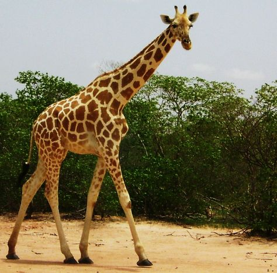

Bears
-
Ollie is a 4-year-old Male Grizzly (or Brown) Bear. He's retired from his acting career where he served as an extra in over 40 films in the nature documentary and horror genres. He sure loves chasing people! Click here to learn more about Grizzly Bears -
Mona is our 6-year-old female Polar Bear. At around 1,300 pounds, Polar Bears are the largest carnivores on Earth! Read more about Polar Bears

Giraffes
- There is only one species of giraffe! Learn more!
- 
Frankie is one of our two female giraffes. The word Giraffe is French for "super weird".
-
Coconut is our other giraffe. Did you know that giraffes are just really old horses? And you can tell the age of a giraffe by how long its neck is? Coconut is about 380 years old!
Lions
- Learn all about Lions or else they will eat you!
-
Mella is our adult female lion. Females do all the hunting in a pride of lions.
-
Karl is our adult male lion. He is a proven man-eater! He also goes through an incredible amount of conditioner.
Karl

Monkeys
-

Cookie is our Mohawk Monkey.
Learn more about The Monkeys! -
Earl is our Capuchin Monkey.
Read all about Capuchin Monkeys.
-
Banana Pudding is our Snub-Nosed Monkey. He stuck his face into a running vacuum cleaner.
Learn more about Snub-Nosed Monkeys.
Alligators
-
Wren is our first alligator. She likes long walks on the beach.
21 Facts about Alligators -
Aspen is an American Alligator. He likes surprizing octagenarians on golf courses.
Alligators are Not Crocodiles! -
Mika is our thrid and final alligator in our zoo. She loves cuddling with children.
Want to know what Alligators like to eat?